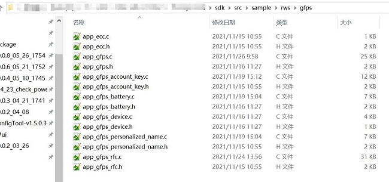
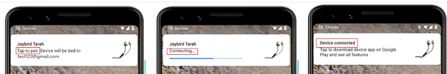
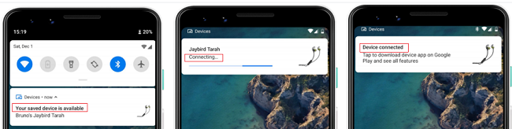

GFPS Application Note
V1.2
2023/06/30
Revision History
| Version | Date | Description |
| V1.0.0.0 | 2021/10/21 | Stable Release |
| V1.1 | 2023/05/30 | Change version number to 2 digits |
| V1.2 | 2023/06/30 | Modify Doc Structure |
Contents
Table List
Figure List
Glossary
| Terms | Definitions |
| BLE | Bluetooth Low Energy |
| GAP | Generic Access Profile |
| GATT | Generic Attribute Profile |
| GFPS | Google Fast Pair Service |
1 Introduction
GFPS is initially aimed to facilitate pairing of bluetooth devices, such as speakers, headphones and car kits, with as little user interaction required as possible. GFPS profile defines two roles:
- Fast Pair Seeker
The Seeker is normally a phone, looking for a device to pair with.
- Fast Pair Provider
The Provider is a device that is advertising its presence and readiness to pair (e.g. a discoverable pair of headphones). To facilitate device discovery, the Fast Pair Provider shall advertise a payload indicating support for the Google Fast Pair Service (with data as described below). The Fast Pair Seeker shall periodically scan for and observe the presence of Fast Pair Provider advertising frames, and take action if interested.
2 Enable GFPS Feature
2.1 How To Enable GFPS in Mcu Config Tool
GFPS feature should be enabled by MCU Config tool. The steps are as follows:
Figure 2-1 Mcu Config Tool Enable GFPS
- Transport:
- LE: must be checked, otherwise the GFPS advertising will not be advertised, and there will be no GFPS function, which is equivalent to the enable/disable GFPS function.
- RFCOMM: It needs to be checked when passing the certification test. In actual application, it is decided by whether the customer needs functions like "Find me" or "Retroactive with account key" or "report the battery function through RFCOMM". More strictly speaking, as long as the customer wants to use the function of GFPS Extensions, RFCOMM should be checked. If device supports only initial pairing and subsequent pairing, there is no need to check it.
- Module ID / Anti-spoofing public key/ Anti-spoofing private key (Hex):
The registered model id, public key and private key must be filled in. These parameters shall not be all zero. Customers need to register these parameters by themselves. The registration address is https://developers.google.com/nearby/devices/
- Battery info enable:
If this option is checked, the battery reporting function will be enabled, the battery information will be included in the GFPS advertising data, and the mobile phone will display the battery level of the headset by scanning the GFPS advertising data.
- Battery show ui: Display battery information on the mobile phone interface, checked by default
- Battery remain time enable: Currently this function is not supported, no need to check
- Left ear / Right ear/ Case battery support: The left ear, right ear and battery box battery information is reported. If Battery info enable is checked, Left ear battery support, Right ear battery support, and Case battery support must be checked.
- Enable TX power data in adv:
Mobile phone refers the TX power data to measure the distance between mobile phone and device. If the distance exceeds, the GFPS notification window will not pop up. It must be filled in. If the TX power data is already filled when register model id in Google nearby device console page, this value will be ignored by mobile phone. So we recommend not to set tx power when registering model id.
- Discoverable/Not Discoverable advertising interval (0.625 ms/per unit):
GFPS advertising interval setting, must be filled in.
- Discoverable advertising interval:
The default value is 32, if this value is set too large, it may affect the efficiency of the initial pairing.
- Not Discoverable advertising interval:
The default value is 100, if want to minimize the power consumption in device idle, you can set the maxmium value to 400, however, it may affect the efficiency of the subsequent pairing.
- Account Key number:
The maximum number of GFPS account key set which device could store in the FTL, which must be filled in.
2.2 How To add GFPS Files into rws Project
Copy gfps files provided in '3rd_service_gfps' to 'sdk/'.
Figure 2-2 GFPS Lib Add Include Files

Figure 2-3 App GFPS Add Files
2.3 How To Set up GFPS Environment in Keil Project
app_flags.h set GFPS_FEATURE_SUPPORT to 1:
#define GFPS_FEATURE_SUPPORT 1
Enable build gfps_lib in keil project:
find gfps_lib in keil project –> right click –> Options for File 'gfps_lib' –> Tick in front of include in Target Build
Figure 2-4 Build GFPS Lib in Keil
Enable build gfps in keil project:
find gfps in keil project –> right click –> Options for Group 'gfps' –> Tick in front of include in Target Build
Figure 2-5 Build GFPS in Keil
2.4 How To Add gfps lib into rws Project
RTL87x3e:
add gfps.lib into the following path
Figure 2-6 Add gfps.lib into RTL87x3e
RTL87x3d:
add gfps.lib into the following path
Figure 2-7 Add gfps.lib into RTL87x3d
RTL87x3g:
add gfps.lib into the following path
Figure 2-8 Add gfps.lib into RTL87x3g
3 Initialization Process
Figure 3-1 GFPS Flow
3.1 In Paring Mode
when radio_mode == BT_DEVICE_MODE_DISCOVERABLE_CONNECTABLE, the provider will call app_gfps_next_action(GFPS_ACTION_ADV_DISCOVERABLE_MODE_WITH_MODEL_ID) to start discoverable advertisement.
void app_gfps_check_state(void)
{
{
APP_PRINT_INFO2(
"app_gfps_check_state: radio_mode %d, bud_role %d", radio_mode,
{
{
app_gfps_next_action(GFPS_ACTION_ADV_DISCOVERABLE_MODE_WITH_MODEL_ID);
}
}
else
{
{
app_gfps_enter_nondiscoverable_mode();
}
}
}
}
3.2 Not In Pairing Mode
Provider will call app_gfps_enter_nondiscoverable_mode() to start non-discoverable advertisement.
void app_gfps_check_state(void)
{
{
APP_PRINT_INFO2(
"app_gfps_check_state: radio_mode %d, bud_role %d", radio_mode,
{
{
app_gfps_next_action(GFPS_ACTION_ADV_DISCOVERABLE_MODE_WITH_MODEL_ID);
}
}
else
{
{
app_gfps_enter_nondiscoverable_mode();
}
}
}
}
3.3 APP Callback
app_gfps_cb function indicates gfps_lib status to app.
1.If app receives GFPS_CALLBACK_TYPE_NOTIFICATION_ENABLE, it means the seeker want to enable cccd.
2.If app receives GFPS_CALLBACK_TYPE_KBP_WRITE_REQ, it means the seeker write key based pairing request to provider.
3.If app receives GFPS_CALLBACK_TYPE_ACTION_REQ, it means the seeker write action request to provider.
4.If app receives GFPS_CALLBACK_TYPE_PASSKEY, it means the seeker write pass key to provider.
5.If app receives GFPS_CALLBACK_TYPE_ACCOUNT_KEY, it means the seeker write account key to provider.
6.If app receives GFPS_CALLBACK_TYPE_ADDITIONAL_DATA, it means the seeker write personalized name to provider.
{
uint8_t ret = 0;
T_GFPS_CALLBACK_DATA *
p_callback = (T_GFPS_CALLBACK_DATA *)p_data;
{
case GFPS_CALLBACK_TYPE_NOTIFICATION_ENABLE:
{
APP_PRINT_INFO1(
"app_gfps_cb: GFPS_CALLBACK_TYPE_NOTIFICATION_ENABLE, T_GFPS_NOTIFICATION_TYPE %d",
}
break;
case GFPS_CALLBACK_TYPE_KBP_WRITE_REQ:
{
app_result = app_gfps_cb_handle_kbp_write_req(service_id,
p_callback);
}
break;
case GFPS_CALLBACK_TYPE_ACTION_REQ:
{
app_result = app_gfps_cb_handle_action_req(
p_callback);
}
break;
case GFPS_CALLBACK_TYPE_PASSKEY:
{
app_result = app_gfps_cb_handle_passkey(
p_callback);
}
break;
case GFPS_CALLBACK_TYPE_ACCOUNT_KEY:
{
app_result = app_gfps_cb_handle_accountkey(
p_callback);
}
break;
#if GFPS_ADDTIONAL_DATA_SUPPORT
case GFPS_CALLBACK_TYPE_ADDITIONAL_DATA:
{
app_result = app_gfps_cb_handle_additional_data(
p_callback);
}
break;
#endif
default:
break;
}
return app_result;
}
4 User Interaction
4.1 Initial Pairing
Initial pairing is the pairing between a Fast Pair compliant device and a phone where user's Google account is logged-in at the very first time, and the phone detects the advertisement from the device and recognizes model ID of the device. Then the user follows the instructions shown in the popup notification to connect the device. (In this guideline, 'device' means the Bluetooth headset or speaker instead of a reference phone)

Figure 4-1 Initial Pairing
4.2 Subsequent Pairing
Subsequent pairing is the later pairing between this previously initial-paired device and the other phone where the same Google account is logged-in, and the phone detects the advertisement and recognizes the account key from the device. Then the user follows the instructions shown in the popup notification to connect the device.

Figure 4-2 Subsequent Pairing